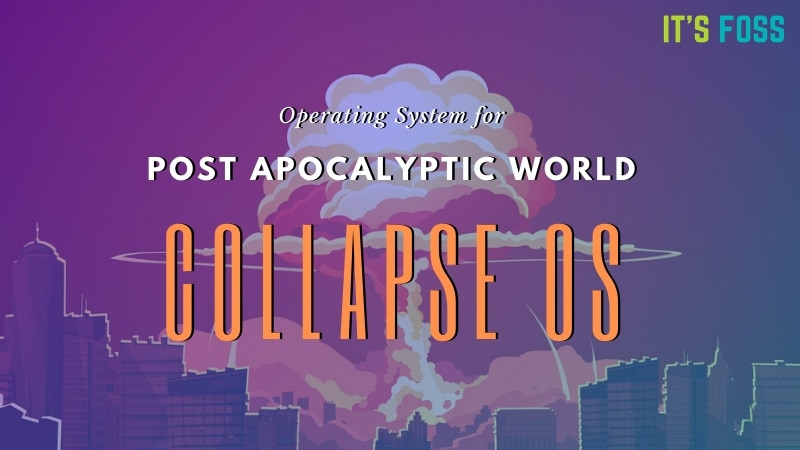
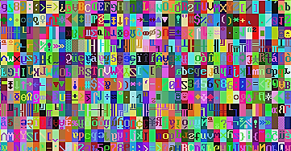
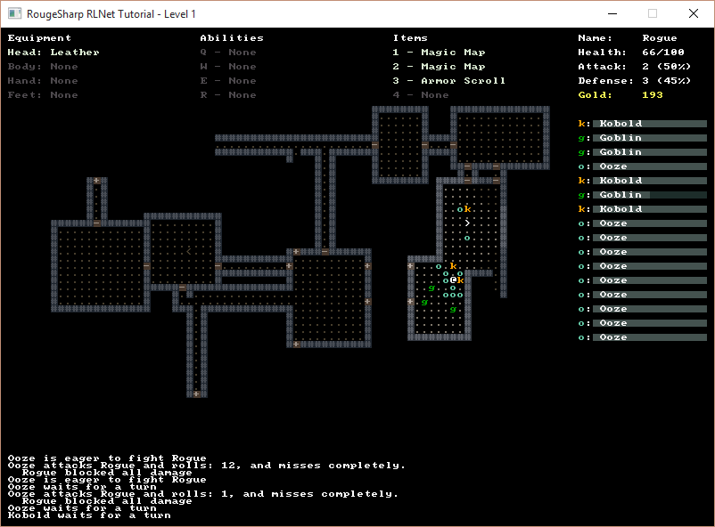

'Collapse OS' - The Post-Apocalyptic OS
01.09.20

"In a post-apocalyptic future, be it nuclear wasteland or Anthropocene nightmare, a common sci-fi trope is that those able to harness old world technology will have the upper hand. Collapse OS is a new open source operating system built
specifically for use during humanity's darkest days. According to its creator, software developer Virgil Dupras, Collapse OS is what the people of the future will need to reconfigure their scavenged iPhones. For now, though, he's hosting
the project on GitHub and looking for contributors."
by Matthew Gault for Vice.
Collapse OS

"SadConsole is an MonoGame 3.7-based game library that provides an engine to emulate old-school console and command prompt style graphics. One or more textures are used to represent the standard ascii character set. SadConsole allows you
to
create console instances which can be managed independently of each other. A console is made up of individual cells which can have a foreground, background, character, and a special effect applied to it. SadConsole targets .NET Standard
2.0"
SadConsole
Getting Started with SadConsole - video

"This blog provides a set of tutorials for using RogueSharp to create a basic Roguelike game with MonoGame, RLNet, or SadConsole. The tutorials are meant to introduce and promote the most frequently used features of RogueSharp."
RogueSharp